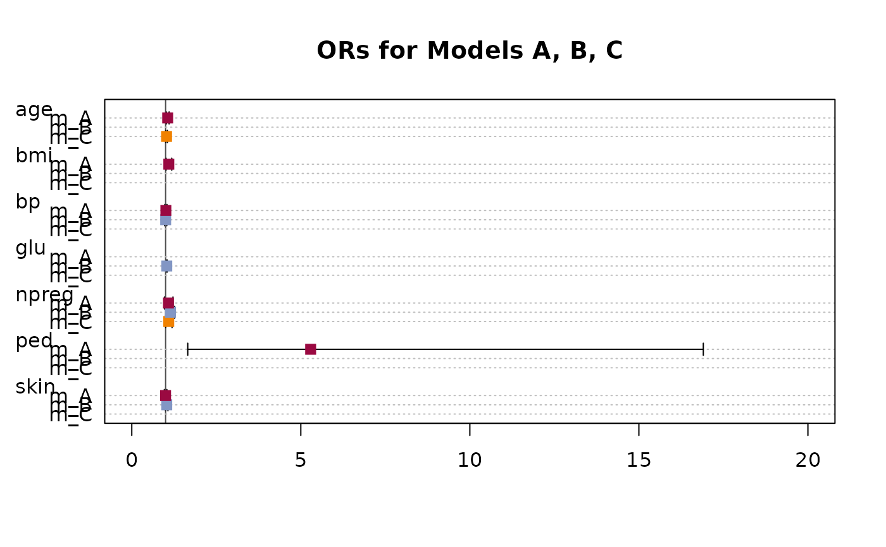

TMod.RdCollect the coefficients and some qualifying statistics of linear models and organize it in a table for comparison and reporting. The function supports linear and general linear models.
TMod(..., FUN = NULL) ModSummary(x, ...) # S3 method for lm ModSummary(x, conf.level = 0.95, ...) # S3 method for glm ModSummary(x, conf.level = 0.95, ...) # S3 method for TMod plot(x, terms = NULL, intercept = FALSE, ...) # S3 method for TMod print(x, digits = 3, na.form = "-", ...)
| x | a (general) linear model object. |
|---|---|
| ... | a list of (general) linear models. |
| conf.level | the level for the confidence intervals. |
| FUN | function with arguments |
| terms | a vector with the terms of the model formula to be plotted. By default this will be all of them. |
| intercept | logical, defining whether the intercept should be plotted (default is |
| digits | integer, the desired (fixed) number of digits after the decimal point. Unlike |
| na.form | character, string specifying how |
In order to compare the coefficients of linear models, the user is left to his own devices. R offers no support in this respect. TMod() jumps into the breach and displays the coefficients of several models in tabular form. For this purpose, different quality indicators for the models are displayed, so that a comprehensive comparison of the models is possible. In particular, it is easy to see the effect that adding or omitting variables has on forecast quality.
A plot function for a TMod object will produce a dotchart with the coefficients and their confidence intervals.
character table
Andri Signorell <andri@signorell.net>
r.full <- lm(Fertility ~ . , swiss) r.nox <- lm(Fertility ~ . -Examination - Catholic, swiss) r.grp <- lm(Fertility ~ . -Education - Catholic + CutQ(Catholic), swiss) r.gam <- glm(Fertility ~ . , swiss, family=Gamma(link="identity")) r.gama <- glm(Fertility ~ .- Agriculture , swiss, family=Gamma(link="identity")) r.gaml <- glm(Fertility ~ . , swiss, family=Gamma(link="log")) TMod(r.full, r.nox, r.grp, r.gam, r.gama, r.gaml)#>#>#>#> coef r.full r.nox r.grp r.gam #> 1 (Intercept) 66.915 *** 51.101 *** 53.411 *** 63.709 *** #> 2 Agriculture -0.172 * -0.026 -0.096 -0.175 * #> 3 Examination -0.258 - -0.872 *** -0.129 #> 4 Education -0.871 *** -0.857 *** - -0.944 *** #> 5 Catholic 0.104 ** - - 0.106 ** #> 6 Infant.Mortality 1.077 ** 1.493 ** 1.796 *** 1.174 ** #> 7 CutQ(Catholic)Q2 - - -0.035 - #> 8 CutQ(Catholic)Q3 - - -5.780 - #> 9 CutQ(Catholic)Q4 - - 5.939 - #> 10 --- #> 11 r.squared 0.707 0.566 0.611 - #> 12 adj.r.squared 0.671 0.536 0.552 - #> 13 sigma 7.165 8.511 8.359 - #> 14 logLik -156.036 -165.243 -162.699 -156.506 #> 15 logLik0 - - - -186.992 #> 16 G2 - - - 60.971 #> 17 deviance 2105.043 3114.635 2795.124 - #> 18 AIC 326.072 340.485 341.398 327.012 #> 19 BIC 339.023 349.736 356.199 339.963 #> 20 numdf 5 3 6 7 #> 21 dendf 41 43 40 - #> 22 N 47 47 47 47 #> 23 n vars 5 3 4 5 #> 24 n coef 6 4 7 6 #> 25 F 19.761 18.699 10.454 - #> 26 p 5.594e-10 0.000 0.000 - #> 27 MAE 5.321 6.826 6.079 5.330 #> 28 MAPE 0.079 0.098 0.095 0.078 #> 29 MSE 44.788 66.269 59.471 45.342 #> 30 RMSE 6.692 8.141 7.712 6.734 #> 31 McFadden - - - 0.163 #> 32 McFaddenAdj - - - 0.131 #> 33 Nagelkerke - - - 0.727 #> 34 CoxSnell - - - 0.727 #> r.gama r.gaml #> 1 48.790 *** 4.184 *** #> 2 - -0.002 * #> 3 0.050 -0.003 #> 4 -0.808 *** -0.015 *** #> 5 0.089 * 0.001 * #> 6 1.290 ** 0.017 ** #> 7 - - #> 8 - - #> 9 - - #> 10 #> 11 - - #> 12 - - #> 13 - - #> 14 -159.674 -157.224 #> 15 -186.992 -186.992 #> 16 54.636 59.534 #> 17 - - #> 18 331.347 328.449 #> 19 342.448 341.400 #> 20 6 7 #> 21 - - #> 22 47 47 #> 23 4 5 #> 24 5 6 #> 25 - - #> 26 - - #> 27 5.869 5.458 #> 28 0.086 0.080 #> 29 52.015 47.361 #> 30 7.212 6.882 #> 31 0.146 0.159 #> 32 0.119 0.127 #> 33 0.688 0.718 #> 34 0.687 0.718# display confidence intervals TMod(r.full, r.nox, r.gam, FUN = function(est, se, tval, pval, lci, uci){ gettextf("%s [%s, %s]", Format(est, fmt=Fmt("num")), Format(lci, digits=3), Format(uci, digits=2) ) })#>#> coef r.full r.nox #> 1 (Intercept) 66.915 [45.294, 88.54] 51.101 [28.928, 73.27] #> 2 Agriculture -0.172 [-0.314, -0.03] -0.026 [-0.173, 0.12] #> 3 Examination -0.258 [-0.771, 0.25] - #> 4 Education -0.871 [-1.241, -0.50] -0.857 [-1.205, -0.51] #> 5 Catholic 0.104 [0.033, 0.18] - #> 6 Infant.Mortality 1.077 [0.306, 1.85] 1.493 [0.608, 2.38] #> 7 --- #> 8 r.squared 0.707 0.566 #> 9 adj.r.squared 0.671 0.536 #> 10 sigma 7.165 8.511 #> 11 logLik -156.036 -165.243 #> 12 logLik0 - - #> 13 G2 - - #> 14 deviance 2105.043 3114.635 #> 15 AIC 326.072 340.485 #> 16 BIC 339.023 349.736 #> 17 numdf 5 3 #> 18 dendf 41 43 #> 19 N 47 47 #> 20 n vars 5 3 #> 21 n coef 6 4 #> 22 F 19.761 18.699 #> 23 p 5.594e-10 0.000 #> 24 MAE 5.321 6.826 #> 25 MAPE 0.079 0.098 #> 26 MSE 44.788 66.269 #> 27 RMSE 6.692 8.141 #> 28 McFadden - - #> 29 McFaddenAdj - - #> 30 Nagelkerke - - #> 31 CoxSnell - - #> r.gam #> 1 63.709 [44.294, 83.44] #> 2 -0.175 [-0.318, -0.04] #> 3 -0.129 [-0.626, 0.36] #> 4 -0.944 [-1.252, -0.63] #> 5 0.106 [0.035, 0.18] #> 6 1.174 [0.479, 1.84] #> 7 #> 8 - #> 9 - #> 10 - #> 11 -156.506 #> 12 -186.992 #> 13 60.971 #> 14 - #> 15 327.012 #> 16 339.963 #> 17 7 #> 18 - #> 19 47 #> 20 5 #> 21 6 #> 22 - #> 23 - #> 24 5.330 #> 25 0.078 #> 26 45.342 #> 27 6.734 #> 28 0.163 #> 29 0.131 #> 30 0.727 #> 31 0.727# cbind interface is not supported!! # d.titanic <- reshape(as.data.frame(Titanic), # idvar = c("Class","Sex","Age"), # timevar="Survived", # direction = "wide") # # r.glm0 <- glm(cbind(Freq.Yes, Freq.No) ~ 1, data=d.titanic, family="binomial") # r.glm1 <- glm(cbind(Freq.Yes, Freq.No) ~ Class, data=d.titanic, family="binomial") # r.glm2 <- glm(cbind(Freq.Yes, Freq.No) ~ ., data=d.titanic, family="binomial") d.titanic <- Untable(Titanic) r.glm0 <- glm(Survived ~ 1, data=d.titanic, family="binomial") r.glm1 <- glm(Survived ~ Class, data=d.titanic, family="binomial") r.glm2 <- glm(Survived ~ ., data=d.titanic, family="binomial") TMod(r.glm0, r.glm1, r.glm2)#>#> Error in .Call("conc", PACKAGE = "DescTools", y[ord, ], as.double(wts[ord]), as.integer(idx), as.integer(n2)): "conc" not available for .Call() for package "DescTools"# plot OddsRatios d.pima <- MASS::Pima.tr2 r.a <- glm(type ~ npreg + bp + skin + bmi + ped + age, data=d.pima, family=binomial) r.b <- glm(type ~ npreg + glu + bp + skin, data=d.pima, family=binomial) r.c <- glm(type ~ npreg + age, data=d.pima, family=binomial) or.a <- OddsRatio(r.a)#>#>#># create the model table tm <- TMod(m_A=or.a, m_B=or.b, m_C=or.c) # .. and plotit plot(tm, main="ORs for Models A, B, C", intercept=FALSE, pch=15, col=c(hred, hblue, horange), panel.first=abline(v=1, col="grey30"))